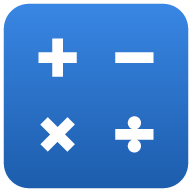
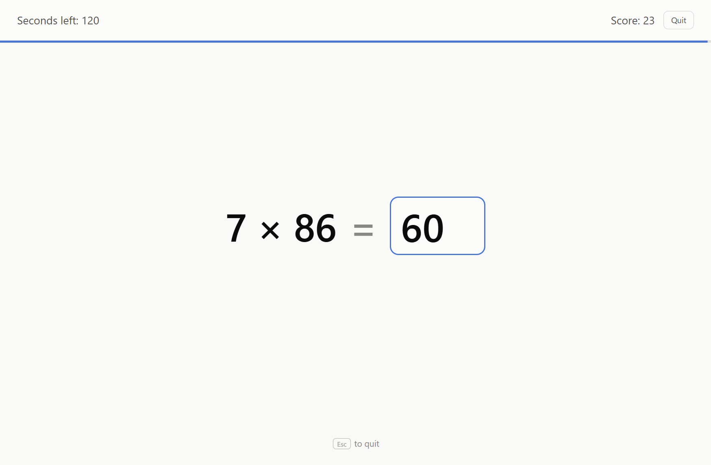
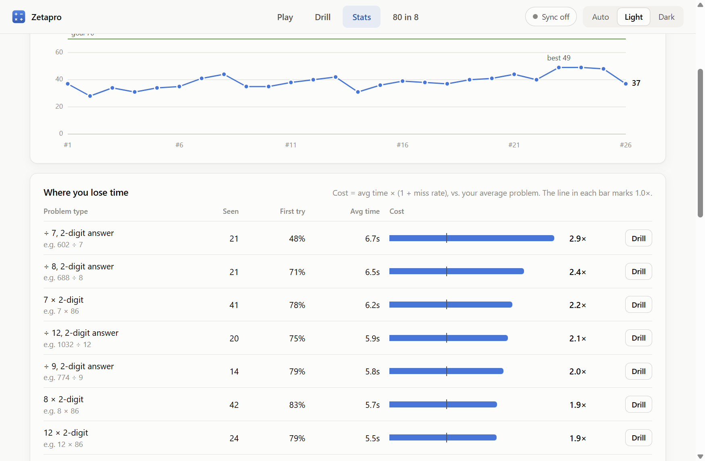
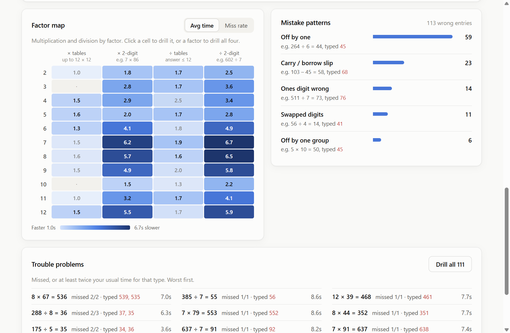
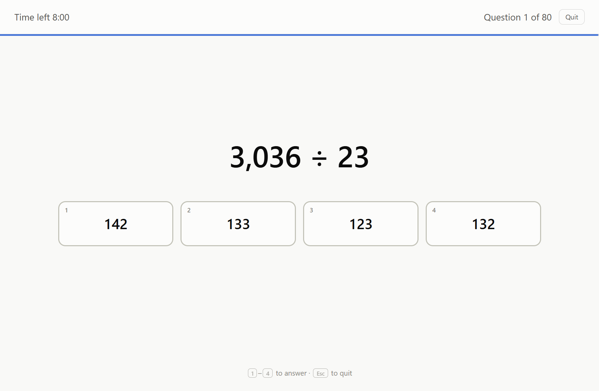

In your browser
Works on any computer, tablet or phone. Nothing to install.
Open Zetapro
Zetapro Open appA Zetamac-style speed game and an Optiver-style “80 in 8”, with stats that show exactly which kinds of problems slow you down, and drills that fix them.
Free · no ads · sign-in optional

Zetamac is great for building speed, but at the end of a round all it gives you is one number. I wanted to know why my score was stuck: which kinds of problems were costing me time, and which mistakes I kept making.
So Zetapro times every answer, sorts it by type, and turns your slowest types and most-missed problems into targeted drills, so practice goes where it helps most. Then I added what I wanted for interview prep: an Optiver-style 80 in 8, goals to hit consistently, and sync so my phone and computer stay in step.
Works on any computer, tablet or phone. Nothing to install.
Open ZetaproOpen the app, then add it to your home screen. It opens full-screen and works offline.
A standalone desktop app. Download, unzip anywhere, and run Zetapro.exe.
Windows may warn that the publisher is unknown, because the app isn't code-signed. Click More info → Run anyway.
On a Mac? Use the browser version. In Chrome you can also install it as an app from the address bar.
Same rules and defaults: 2 minutes, answers accepted the instant they're right.
Every answer is timed and sorted by type: carries, borrows, each times table, 2-digit products.
Smart drills built from your slowest types, plus the exact problems you keep missing, with pace tracked per minute.
80 multiple-choice questions in 8 minutes: decimals, fractions, missing numbers. Net scoring.
Set a target score and see how often you hit it, and how each round compares with your recent average.
Optional: sign in with Google or email and your games follow you across phone, tablet and computer.
A built-in number pad, tabs within thumb reach, and it works offline once added to your home screen.
Undo a delete, bring back earlier synced versions, or export everything to a file.
An optional 3-2-1 start, a red clock for the final seconds, and nothing else on screen.



No ads and no tracking: the site uses no analytics. Signing in is optional; everything works without an account.
Games are saved on your device. If you sign in, they sync to your own private account, which only you can read.
A personal practice project. Found a bug or have an idea? Open an issue on GitHub.